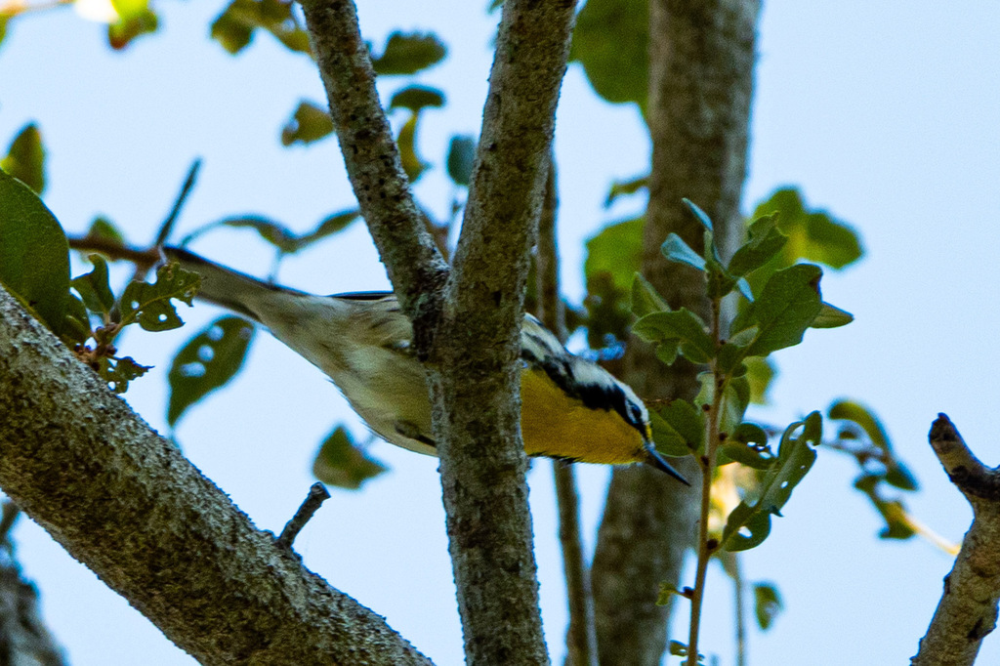

- A sharp-looking gray-and-white warbler with a vivid yellow throat, bold black mask, and long white eyebrow stripe. Two white wingbars and black streaks along the flanks complete the field mark set.
- Forages more like a nuthatch than a typical warbler — creeping methodically along branches and probing bark crevices, pine cones, and needle clusters with a notably long, pointed bill.
- One of the earliest warblers to return in spring, often arriving before leaves emerge. In Florida winters, watch for them probing the fronds high in palm crowns.
- Early naturalist Mark Catesby called it the Yellow-throated Creeper — a name that still fits perfectly today.
- The oldest confirmed wild individual lived at least 6 years and 10 months — a male banded in Alabama in 2012 and spotted again in Ohio in 2018, well beyond the species' typical lifespan.
A slender, long-billed warbler with a brilliant yellow throat, white underparts, and plain gray upperparts. Bold black mask, a long white eyebrow stripe, a white neck patch, and two crisp white wingbars. Black streaks run along the flanks.
Compared with other warblers, the body is slightly heavier and the bill noticeably longer and thicker — a key structural clue even at distance. The tail is blunt and only slightly notched.
Males and females look alike at a glance, but females and first-year birds are somewhat duller, with less intense black on the face and slightly washed-out flanks.
No other eastern warbler combines a bright yellow throat with gray-and-white plumage. The Blackburnian Warbler shows yellow on the throat but has a yellow — not white — eyebrow stripe and pale back streaks.
Song is a melodic, descending series of clear whistled notes that accelerates and then rises abruptly on the final note — often rendered as teeew-teeew-teeew-tew-tew-twi. Frequently delivered from a high, exposed perch in the canopy. Call is a sharp, strong chirp.
In winter and early spring (November through March), scan the undersides of palm fronds and the coarse bark of mature pines for a tiny gray-and-white bird creeping deliberately along limbs rather than flitting — the yellow throat glows like a lantern even in dappled shadow. During the breeding season and spring migration, listen for a loud, sweet, descending whistle drifting down from the highest pine or cypress canopy; singing birds will often perch at the very tip of an exposed branch. Year-round, the long bill is visible the moment the bird leans into a bark crevice or needle cluster — no other warbler in the park probes quite like that.
Primarily insects and spiders — beetles, moths, caterpillars, grasshoppers, crickets, flies, mosquitoes, ants, scale insects, and aphids. In winter in Florida, they also forage on insects attracted to flowering palms.
Scan the upper canopy of the park's taller trees — pines, live oaks, and palms are all worth checking. Birds spend most of their time on the outer portions of high branches, so binoculars aimed upward are essential. During migration or on cold mornings, individuals occasionally drop lower, making a closer look possible.
Present in the Bradenton area primarily from fall through early spring as a winter resident, with peak activity November through March. A small non-migratory population resides year-round in north and north-central Florida. Most active and vocal during daylight hours; migrants travel mostly at night.
Observe and enjoy. Because Yellow-throated Warblers are canopy specialists, tracking one through the treetops can quickly earn you a sore neck — what birders affectionately call warbler neck. Stay on established pathways so you can safely keep your eyes on the canopy, and avoid stepping into garden beds or native understory plantings while looking up.

- © Rob Carr (CC-BY-NC), via iNaturalist